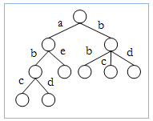
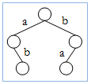

In Computer Science Trie or prefix tree is a data structure which is usually used to store some strings or some numbers. Unlike binary trees, edges contain characters. And a node actually represents a string which is found by taking the characters from the edges, in the path from root to leaf. For example, for {abc, ae, bd, bb, bc, abd} we get the following trie:

Now you are given a set of strings and each string uses one of the K character symbols, and in any string (from the set) a symbol occurs at most once. Your task is to find the number of nodes required if we make a trie with the strings, using the procedure described above. As you don't know the size of the set, your task is to find the worst case result. For example, if you have 2 character symbols, then you need 5 nodes in worst case as in the following trie (let the symbols be {a, b}):

#include <bits/stdc++.h>
using namespace std;
#define pb push_back
#define vi vector <int>
#define ll long long int
int mm=0;
vi ins;
vi input;
map < int , int > ma;
map < int , int > fa;
void func()
{
ll la = 2;
ll cur=5;
int pos=0;
while (ins[pos] == 1){
pos++;
ma[1]=2;
fa[1]=0;
}
int flag=0;
for (int i=2;i<min(mm+1,100000100);i++){
ll temp = cur;
cur = (la*i+1);
if (cur > 10000)
flag=1;
cur = cur%10000;
//cout<<i<<" "<<cur<<" "<<la<<endl;
la=cur;
while (pos < ins.size() && ins[pos] == i){
ma[i] = cur;
fa[i] = flag;
pos++;
}
if (pos >= ins.size())
break;
}
}
int main ()
{
//freopen("input.txt","r",stdin);
//freopen("output.txt","w",stdout);
//ios_base::sync_with_stdio(false);
int t;
scanf("%d",&t);
for (int i=0;i<t;i++){
int foo;
scanf("%d",&foo);
input.pb(foo);
ins.pb(foo);
mm = max(mm,foo);
}
sort(ins.begin(),ins.end());
func();
for (int i=1;i<=t;i++){
if (fa[input[i-1]] == 1)
printf("Case %d: %04d\n",i,ma[input[i-1]]);
else
printf("Case %d: %d\n",i,ma[input[i-1]]);
//cout<<"Case "<<i<<": "<<ma[input[i-1]]<<endl;
}
return 0;
}